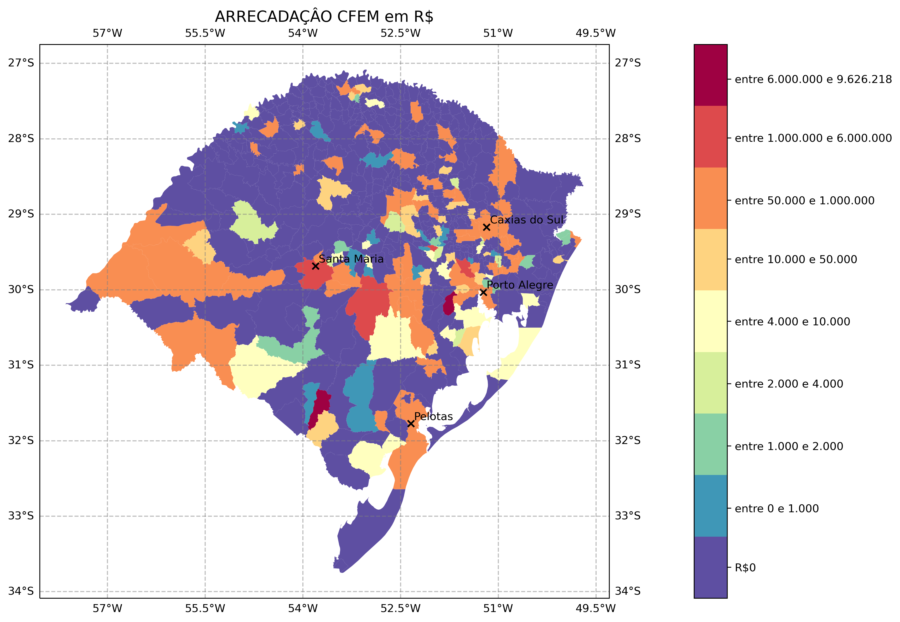

A CFEM, estabelecida pela Constituição de 1988, em seu Art. 20, § 1º, é devida aos Estados, ao Distrito Federal, aos Municípios, e aos órgãos da administração da União, como contraprestação pela utilização econômica dos recursos minerais em seus respectivos territórios.
Os recursos da CFEM são distribuídos da seguinte forma:
O gráfico de barras mostra a contribuição para a CEFEM de cada substância no estado do RS.
O mapa a seguir mostra a CEFEM recebida pelos municípios produtores do estado do Rio Grande do Sul no ano de 2019. Os valores foram divididos em 9 classes assimétricasm já que a distribuição dos valores também é assimétrica.
O mapa a seguir mostra as áreas de proteção ambiental do estado do Rio Grande do Sul e as devidas zonas de amortecimento de 3 e 10 km. Além disso, o mapa mostra o potencial de mineração de cada município que é uma contagem absoluta dos processos na ANM, excluídos os processos de requerimento, para todas as substâncias minerais.